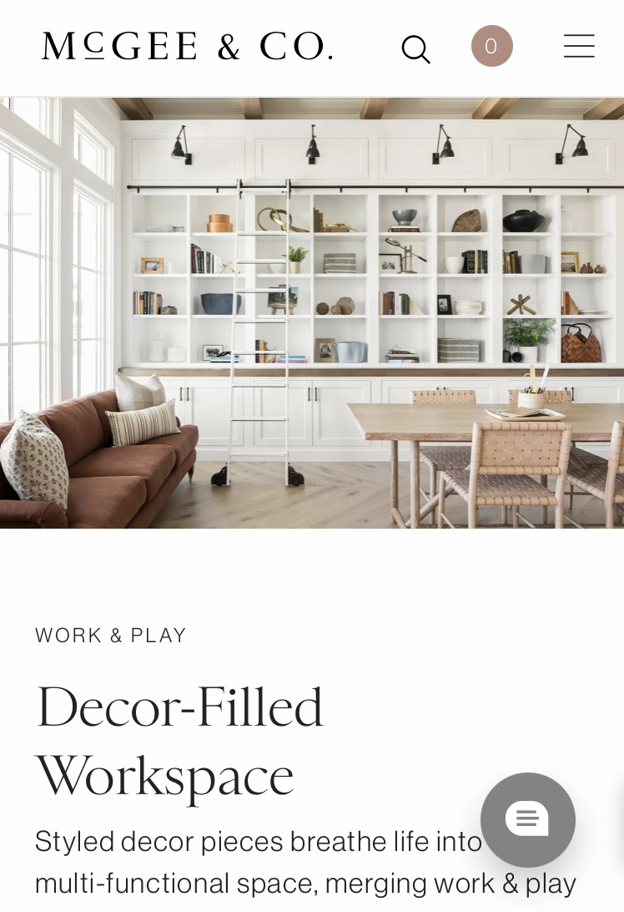

Hicks Law
Amazon.com
Amazon.com is a great example of Hicks Law which states: Hick's law is a psychological principle which states that the more options are available to a person, the longer it will take for him or her to make a decision about which option is best. I think this is a good tatic for Amazon due to the amount and variety of products that they sell on their website. It is just another way for them to keep shoppers on their website longer. When this happens, the statistics show people spend more money the longer they are on a website.
Visual Hierarchy
ChurchofJesusChrist.org
ChurchofJesusChrist.org is a good example of Visual Hierarchy. When you first go onto their website, one of the first things you notice is the size difference in their picture above the various headlines. Clearly they are trying to use visual Hierarchy to point to the most important information to the least important on their website. According to definition: "Visual hierarchy influences the order in which the human eye perceives what it sees."
Fitts Law
McGeeAndCo.com

Per definition: "Fitts ’ law states that the amount of time required for a person to move a pointer (e.g., mouse cursor) to a target area is a function of the distance to the target divided by the size of the target." McGee and Co is a sales website for interior design and decor. They provide several different services. As you are on their website on the desktop or on a mobile device, they do a great job at putting the most important actions on their website close and easy to click on for us users. This has proven to increase sales and activity on your website.